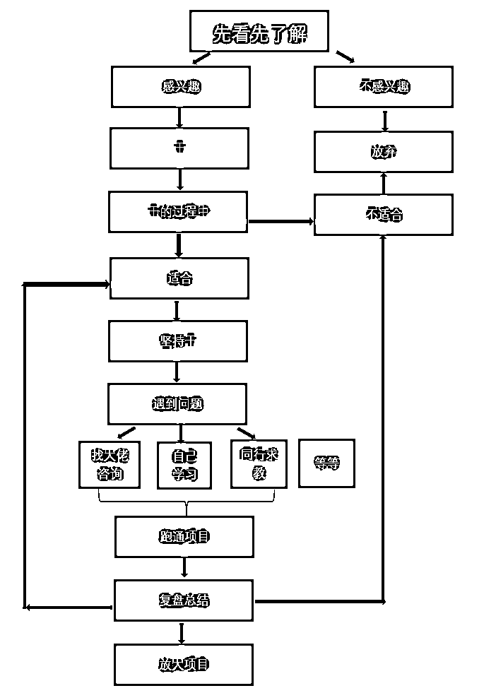
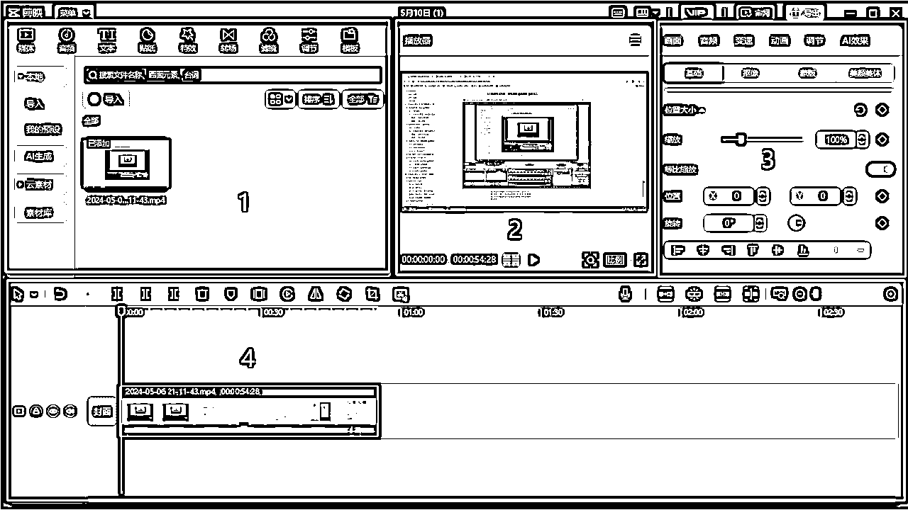
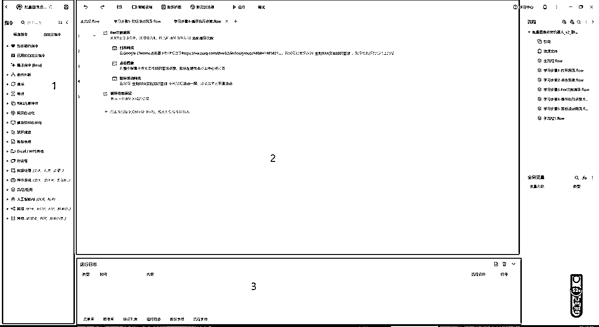

来源：https://f0ym6s15nt1.feishu.cn/docx/QKaddBn5yozBEbxlcN4cdCj6nwh
本文内含8个视频，3个教程，约6900字，阅读时间约15min。
大家好，我是泰来，第八期新圈友，主业是轮滑/滑雪教练，坐标河北保定，目前加入生财一个月的时间，快速入门了剪辑（ip直播切片），RPA这两个小项目，并且很多小项目正在进行中。
本文希望给和我一样刚加入生财，处于迷茫焦虑的小伙伴们一些建议，希望帮助你们快速找到适合自己的项目。
并提供快速入门剪辑，直播切片的思路，快速入门RPA的教程。
快速直达：
4.7 给大家的建议
5.1 快速入门剪辑
5.2 直播切片思路
5.3 快速入门RPA
我是泰来，entp（话唠版），狮子座，立志成为生财最酷的girl。
是一个轮滑/滑雪教练，目前做教培。
会一点点剪辑，PS，RPA。
学习能力强，项目上手快，善于抓重点。
空余时间较多，可做一些志愿者的工作。
注：该作品已被生财有术官方采纳，发布在官方视频号上。
注：上方所有作品已被靠谱姐采纳，发布在视频号上。
最初知道生财，是好几年前在一个盲人朋友那了解到的。
在一个app上帮盲人朋友读了两行代码，刚好我那时候也在自学python，很好奇他是怎么学习编程的，于是有了后面的交流，通过他初步知道了生财。
后来听了@陈雪🦉碎碎念 雪姨的播客【搞钱女孩】，里面也讲到过生财。于是添加了鱼丸。
现在回过头来想，对自己成长帮助最大的事情，就是利他。
如果没有利他，我可能到现在也不会知道生财，更不会加入一个这么优秀的圈子。
加了鱼丸之后，从来没说过话，当时也翻了翻鱼丸的朋友圈，感觉不相信，之后我就继续忙自己的事情了。
（现在想想，真是错亿了，不过当时认知不够，可能加入了也不会像现在这样认可生财。）
由于家里负债压力大，我的工资也不稳定，想去做点赚钱多的项目，不知道自己能干什么，手头上没有钱去报课或投资，也不敢辞职失去工资，只能是打工→还账无限循环。觉得人生也就这样了，没有什么意思。
试着做过团购群，但也没有成效，一直处在还账压力巨大+迷茫焦虑中。
4月，鱼丸跟我说可以参加生财的公益课，抱着听听看的态度我进入了体验营。
当天直播课，晚上我工作上有个会议，没赶上开始。鱼丸说会议结束后直接进去听课就好。
当时也挺晚了，我想着要不明天再听吧，但是脑子里又有一个声音说，已经报名参加了，就按照课程要求一步步跟着来。然后克服困意进直播间听课。
听完纪钟老师第一天的直播课，并且领取了3天的星球体验卡后，我非常激动，想着这不就是我要找的努力方向吗？
前沿消息+航海实战+优秀圈子
于是一晚上没睡，忙着看精华帖，看风向标，看航海手册。
感谢当时自己的执行力，如果第一天拖延了，后面大概率不会再打开学了。
体验营3天大量地阅读生财里面的内容，觉得自己像刘姥姥进了大观园，看什么都大开眼界，拓展思路。
原来这个项目可以这么做，原来这些我之前看起来无意义的行为人家都在赚钱。
雪姨的播客也那么推荐生财，生财也正是我需要的。
最后一天直播课的时候，毫不犹豫地加入了生财。
鱼丸说5月底才会开航海，那我这接近两个月的时间要干嘛，干等着吗？
我开始大量的看精华帖，风向标，越看越焦虑，不管是比我大的还是比我小的，要么就已经功成名就，要么就找到了项目并持续深耕。每个人都有方向，每个人都在努力，每个人都有成果。
我的成果是天天学习，每个帖子都研究一遍，每个项目都去搜，感觉每个都感兴趣，感觉做哪个都需要再学习，于是陷入了看帖→学习→焦虑的死循环。
生财里太多干货了，我感觉照我这个学习方法，学一辈子也学不完。
但我还是天天学习，一有空就拿出生财使劲儿看，这种状态大概持续了十天。
我难道还要这么继续持续到航海吗？
迷茫焦虑间看到了柯总@张柯Ker无私分享的短剧CPS的帖子，链接了柯总。
在这非常感谢柯总，给我大胆试错+照着航海手册跑的建议。我得动起来。
于是开始看航海手册，粗略的每个手册都看了一遍，然后挑自己感兴趣的项目精读，跟着手册一步步做。
（其实再多建议，执行还是要看自己）
关于怎么开始执行，我是这么做的
先从最简单的开始，一步步来。比如闲鱼第一步：搭建帐号。
原来的号换个名字换个头像改个简介，（这不是我闲的无聊也会干的事吗），然后奖励自己（吃零食或打把游戏）。
得到正反馈后更愿意干了，再进行下一步，再奖励自己。
这样一边干一边获得奖励，不到一个月的时间，已经尝试了5个项目。（非常有成效，可以试试）
看懂一个项目不重要，重要的是先干起来。
到目前我尝试了闲鱼高客单无货源，短剧CPS，ip直播切片，RPA，小红书达人，中视频计划。
对于每一个项目都要写流程，从0开始，一步步做，解决项目中出现的卡点，总结流程+复盘，判断适不适合自己。
适合的继续坚持，不适合的果断放弃。
在刷帖子的时候偶然发现了@牛顿273发布的帖子
【爆肝48小时，一天播放破万，大型纪录片《生财有术S8赛季》的制作全过程复盘！（含5k字图文超详细剪辑教学）】
https://wx.zsxq.com/dweb2/index/topic_detail/5122188488818844
结尾写剪辑志愿者团队招人，看他们视频做的非常厉害。
考虑到后期无论做什么项目都离不开剪辑，也想学习，于是链接了牛顿，加入群聊。
由于自己从没做过，刚开始几天都在群里潜水。
之后牛顿273发了一条靠谱姐的直播回放，并给出了老虎剪出来已经被靠谱姐发到视频号的作品，照着这个对标，我就开始研究。
先看剪辑教程，对应着一步步来，哪里不会就百度搜，实在搜不出来就问牛顿，边学边干。
就这样，我耗费了8个小时（甚至更长），剪出来了第一条直播切片，并被靠谱姐发到了视频号上。
当时非常激动，第一条作品就得到了正反馈。
于是更加坚定了我要继续学习剪辑的决心，随着剪得次数多了，一次次剪完复盘，复盘完修改直至成品。视频剪得越来越快且越来越好。
在这期间给生财官方提供了一条切片，给靠谱姐视频号提供了若干条切片。给群里的小伙伴提供了N条视频教程。
从开始的8小时到现在的1小时。
从一点不会到可以教别人。
从0基础到可以快速高质量产出直播切片，我只用了不到半个月。（下班之后的空闲时间天天爆肝）
我发现工作中一些事情是重复无意义的，这时我就想到了学习RPA。
对着航海手册一步步来，在uibot注册上遇到了卡点，这时正好看到沐之发的RPA零基础入门的课程，课程开始后工作比较忙，于是挑出空闲时间学习了3天，由于有编程的一点点基础，快速掌握了RPA的入门搭建，课后根据自己实际需要，用影刀搭建出来了第一个切片前端批量处理机器人。
在进入生财这一个月里，我像是干瘪海绵进入了大海里，无时无刻地学习，进步。
学会了剪辑和RPA的技能，尝试了N个项目并从中找到适合自己的持续坚持。
对之后要做什么也有了大致的思路。
链接到了大佬和很多优秀的圈友。
如果你和我一样，都是刚刚加入生财，还在观望，或是没有找到自己的方向
我从这一个月进入生财的经历来给到大家几点建议：
我是这么做的：

先看100篇精华帖，这是基础（引用七小的话）
保持开放的思维，了解的多了，才能更快找到方向
现在我还没完成这个目标，正在保持持续看精华帖的好习惯。
要实操，但没有方向的话，可以先挑航海手册里自己感兴趣的一个，照着手册一步步来，都是保姆级教程，前期建议可以先做一些能快速拿到正反馈的项目，积累一点信心（引用柯总的话）
看是解决不了任何问题的，只有实践了才能知道项目到底适不适合自己。
执行力是第一要素，看会不执行=0。
不适合的果断放弃，勉强做一是痛苦，二是拿不到好结果。适合的就一定要坚持。
不能该放弃的坚持了，该坚持的又放弃了。
利他思维对我来说是叩开生财大门的钥匙，之后我也会继续保持，利他就是最好的利己。
大佬的一句话，可能就能解开困扰你一个月的问题，不要闭门造车，钻牛角尖。
很感谢各位大佬对我的帮助和建议，让我不是原地打转，而是小步快跑前进。
输出的时候又要会，还得总结，还要让别人理解或学会。学会不是会，能教会别人，才是真的会。
刚学剪辑的时候问的很多小白问题牛顿也一一给我解答了，如果羞于开口，不知道什么时候才能学会剪辑，之后也交流了一些别的领域的问题，每次交流都会给我新的启发（再次感谢牛顿）
大佬们的经验和建议也非常干，不敢开口可能我现在还在天天学习。
现在看的、学的、做的每件事情，每个知识都是某天起飞的燃料，不要急于拿到结果，保持心态，做好一切准备工作，等风来。
很多事情干完了，就放在那了，不总结不复盘也不知道自己做的过程怎么样，有没有需要优化的点，之后怎么才能解决问题/提高效率。
此方法可能并不适用于所有人，在这我只是提供一个自己的学习方法
我觉得看视频教程一点点学是最慢的方法，我的习惯是，边干边学，遇到难题再搜索，实在不行问大佬。
（用此方法可以套在学习任何技能上）

我把界面分成了4个部分
用到最多的主要是：
1.1 文本:智能字幕（识别字幕，文稿匹配）
用来智能生成视频字幕，或是根据已有的文稿快速定义到视频位置
1.2 音频：音乐素材，音效素材
用来添加视频BGM，音效
1.3 特效
1.4 转场
可以调整预览视频比例，看剪出来的视频有没有掉帧，卡顿，音画不同步，字幕有没有两行。
用到最多的主要是：
3.1 音频，音量调整大小
（添加文本后）
3.2 文本（调整字体大小，样式，花字）动画
3.3 字幕（校对有没有错别字，长句换行）
上面一栏工具可以快速分割视频片段，调整视频比例，镜像，智能剪口播
拖动那个小长条（我也不知道叫什么），可以快速预览视频内容
首先把视频拖到轨道区，进行调整比例，（智能剪口播），简单分割，删除多余部分，加字幕，加特效，加转场
接着对字幕进行字体，样式调整，加花字，加动画。
最后加音频，调整音量大小，加音效，加到合适位置。
简单的视频就剪好了。
入门剪辑并不难，关键是要先动起来。
后面再学习，关键是看剪哪方面的内容，像去重，混剪，我之后也学习了一段时间。
发现只要简单的入门了，剩下的就是熟悉操作流程+实际问题解决。
ip直播切片是一个需要比较细致的工作。
视频转音频并上传到AI生成文本（我这里上传的是通义听悟）
（一般直播时长会在1-N个小时，如果每条视频都看完再开始剪，效率极低，如果上传到剪映生成智能字幕要生成很久，同样很耗费时间）
得到视频文稿后，预览大致内容，找到需要剪的部分，记下时间。
视频导入剪映，根据需要剪的的时间切掉多余部分，只留下我们需要的那一段。
智能剪口播，把所有气口，语气词，重复，停顿，以及不需要的内容全部删掉。
调整字幕
先选好字体大小，样式，并在右边字幕里，把所有长句换行，保证视频出现的只有一行字幕。
校对有无错字，数字和英文要统一格式，敏感词要替换。
这一步最耗时间，也最需要耐心。
从头开始看视频，逐句分析，停顿去掉，没说完的字补全，两句话中间连贯（但也不能太快），字幕时长和视频内容要一致，挑出关键词，金句。
给关键词，金句加合适的花字，动画，音效。
挑选合适的BGM，降低音量，调淡出时长。
(加封面，选好封面放在视频开头)
以上步骤都做完之后，整体看遍视频，如果没有问题，完成切片，如果哪步出现问题，再返回去调整。
其实切片不难，但是很耗时间。
因为要去芜存菁，逐句校对，对视频输出内容的把控和对视频节奏的把控需要一点点去练。
我这里给大家放一个快速粗剪和精剪的视频教程。
（那时候还没有用到智能剪口播，而且教程剪的是官方素材，相对于直播切片会更复杂些）
前端处理是重复无意义的工作，于是我学了RPA，并把这部分工作交给机器人。
此方法可能并不适用于所有人，在这我只是提供一个自己的学习方法

我们需要的指令都在左侧能找到，把指令拖到2.流程框中，设定好，就可以执行对应指令
一个机器人运行的所有指令都一步步放在这了，给他们排序，设定好相关数据
从这里能看到是哪条指令运行中报错了，对应的错误代码是什么
熟悉完界面后就可以熟悉指令了。
了解元素、循环和几个最常用到的网页和系统指令。
由于RPA是模拟真人操作电脑，所以我们要把每个步骤都做一遍，然后写好流程图。
根据流程，在指令框找到对应指令，添加到流程框里，设定好参数。
然后一步步对照自己的操作，让RPA去操作电脑。
比如，工作流程是：
打开浏览器→打开百度→点击输入框→输入我需要搜索的内容→点击搜索
这时候找到对应指令：
打开浏览器并打开相应网页（输入百度的网址）→输入文本（写入需要搜索的内容）→点击元素（搜索）→按顺序排好。
点击运行，电脑就会自动跑完整个流程
如果写的程序简单，可能一遍就能运行起来并投入使用
如果写的复杂，涉及到多个软件的调用，这时候可能会出现报错，或是RPA操作的不是我需要的过程。
这时候我会：
是不是哪个指令的参数设置错误，或是定义的不清楚
在影刀学习中心里，可能会有其他人跟我们遇到相似的问题，看他们是怎么解决的
实在无法理解，也搜索不出来，那就去学习，这个指令的底层逻辑是什么，怎么运行的
RPA的搭建场景是：这个工作重复无意义，且以后会在我的工作场景中高频出现，且不需要人工精细做。
如果你有学习任何编程语言的基础，上手RPA会非常快，因为可以自己设置变量，参数调整也一目了然。
如果你没有学习任何编程语言的基础，那么你也不需要非常深入的研究一个指令的底层逻辑到底是什么。
我们的目的是，通过RPA提效，让我们从重复机械无意义的事情中解脱出去，而不是去研究RPA。
通过自己编写脚本和朋友交流等，我又学会了更新RPA流程，并让它把流程做的更快更好。
由于我写的程序代码太长，解释起来也非常复杂，我在这里放一个效果演示视频。
（程序目的是：快速通过剪映批量视频转音频，并上传到通义，完成直播切片的前端工作）
（工作流程是：打开导入文件夹，创建excel填入要导入的视频名，导入视频，在剪映里打开后并输出音频（批量循环），关闭剪映，打开通义，上传音频（批量），开始传输）
比如我需要重复导入30个视频转音频并上传到听悟，人工手动慢慢做可能要一小时。（失去耐心）
通过RPA提效后，它半小时不歇就能做完了。（且不需要我）
我设置好脚本之后电脑会自动操作，在这期间我就可以打游戏/看剧/吃饭....
总结：RPA能替代人工且更高效率地完成工作，并且在RPA工作的时间我能去干别的，太香了。
墙裂安利大家去学RPA，让机器人去干重复的活，让我们有更多时间去思考/精细工作~
如果有需要，可以找我拿
感谢@鱼丸 拉我进新人营，并鼓励我开始学习什么时候都不晚。
感谢@七小 提供这么好的机会，愿意带大家入门剪辑，我从中学会了很多技能，认识了许多伙伴。
感谢@张柯Ker 柯总提供给我前期怎么做的建议，让我走出迷茫，快速下场。
感谢@梁靠谱 靠谱姐给了无数的表扬称赞，我还在切片靠谱姐直播内容的时候学到了很多宝贵知识。
感谢靠谱姐给的修改帖子的宝贵意见（靠谱姐超级厉害，超级好！），以后写帖子都有方向了！
感谢@陈雪🦉碎碎念 雪姨的播客真的提供了很多思路，让我想起了生财，并最终决定加入。
雪姨还会在群里分享很多干货，有很多执行力超强的小伙伴，每天都能学到新知识，都有新动力！
感谢@牛顿273拉我进志愿者群，在剪辑的问题上耐心解答，给我鼓励，帮我复盘，每次都肝到深夜。
我现在遇到问题还是会问问牛顿，他都会给出宝贵意见和经验！
感谢@大铭 大铭哥分享了中视频计划，还给我提供了在RPA在搭建过程中遇到的实际问题的解决思路。
感谢@沐之 分享RPA入门课程，带我入门，并在群里耐心地解答问题。
到今年，靠着打工基本还清了家里负债，如果早些加入生财，是不是我这几年的人生就会完全不一样？
但是有一句话是，人永远赚不到认知以外的钱，就算凭运气赚到了，也会凭运气亏出去。
这几年的辛苦，也并不是全无收获。虽然在焦虑，但一直在提高认知，直到加入了生财。
找到了这个时代焦虑的解决方案（引用Max Guo大佬的话）
我是泰来，希望大家互相学习，一起进步，一起生财有术~